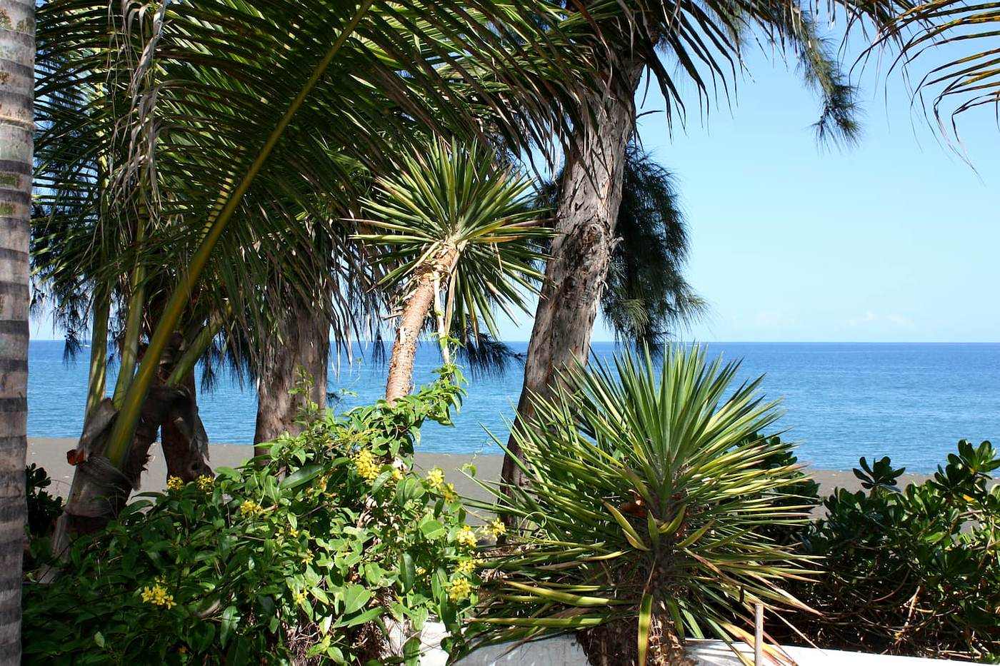

Bungalow · Saint-Paul
Pieds dans l'eau dans la baie de Saint-Paul, entre le marché et le cimetière marin : un bungalow de 47 m² pour deux, le sable au bout du jardin.

L'essentiel
Directement sur la plage de la baie de Saint-Paul : le portail franchi, vous êtes sur le sable.
Entre le marché et le cimetière marin, à 500 mètres de chacun, avec le centre-ville tout proche.
Une chambre pour deux, un séjour-cuisine, un patio, un petit jardin et un barbecue.
Hôtes depuis 12 ans, Superhôte sur Airbnb, chaleureux et attentionnés, avec une réponse en quelques heures.
Équipements
2 voyageurs · 1 chambre · 1 lit double · 1 salle de bain · 47 m² de plain-pied
Ils en parlent
Coup de cœur voyageurs : le bungalow fait partie des logements préférés des voyageurs sur Airbnb.
« Séjour de 3 semaines agréable avec une vue sur l océan indien. Les hôtes sont des personnes très agréables , toujours souriants et arrangeants. De véritables rayons de soleil. J en garderai un super souvenir. »
« 1 mois chez Véronique et Roland c'est une cure de bonheur pour un an, que dire de ce séjour : une petite maison en bord de plage , le bruit de la mer et des couchers de soleil magnifiques ,et la gentillesse de… »
« … Le logement donne sur la mer, il est atypique et propose de grands espaces (cuisine ouverte, jolie terrasse, très belle salle de bain) L'ensemble est aménagé avec gout et charme. … Cette jolie parcelle respire la zénitude et restera inoubliable lors de votre passage ici. »
« Un havre de paix qui participera à votre dépaysement: le bungalow est en première ligne de mer, vous franchissez le portail et vos pieds fouleront directement la plage de sable noire volcanique. … Ce petit paradis caché reste en plein centre-ville ce qui vous permettra de faire vos courses à pieds. »
« Les propriétaires sont adorables. … Très attentifs et aux petits soins. Des petites attentions tout au long du séjour. Le bungalow est décoré avec beaucoup de goût, très bien entretenu, literie top. Le lieu est superbe, la vue incroyable. »
« Nous avons passé un excellent séjour dans le bungalow de Véronique , nos hôtes étaient très accueillant et aux petits soins et le gîte superbe, atypique et sur la plage ! Le rêve ! Les marché et les commodités accessibles à pied . »
Extraits d'avis publiés sur l'annonce Airbnb du bungalow, cités mot pour mot. Lire tous les avis
Le quartier
Le spectacle de la baie
Les dauphins viennent souvent dans la baie, et pendant l'hiver austral les baleines s'ébattent au large : un spectacle à guetter depuis la plage, au pied du bungalow.
Tel que le racontent Véronique et Roland sur leur annonce.
Infos pratiques
Horaire à convenir avec Véronique et Roland ; dépôt des bagages possible avant ou après l'heure d'arrivée
Horaire à convenir avec Véronique et Roland
Jusqu'à 2 voyageurs ; longs séjours bienvenus, dès 28 nuits
Un havre de paix pensé pour deux voyageurs, au rythme tranquille de la baie
Sur demande, selon vos dates
Collectée par l'hôte pour les réservations en direct